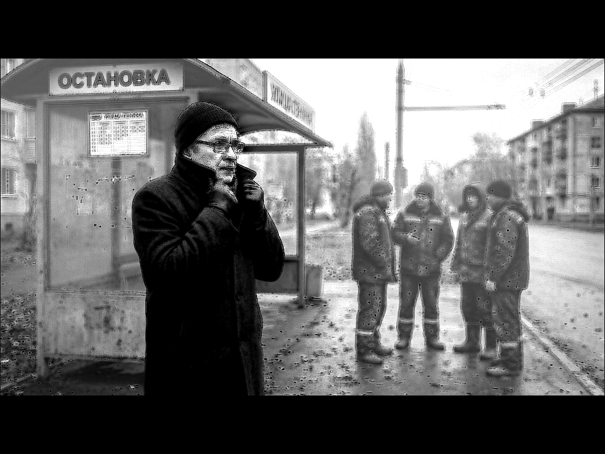

Книга «Фугу для человечества»
Глава 5. Этикетка сожрала содержимое

(в которой бумажная классификация притворяется фундаментальной)
У любых вопросов есть два пути.
Либо их забывают, либо решают бесконечно.
Семья, чашка, кухня – никуда не делись. А вот больной приятель — из иной жизни.
В этот день Дмитрий Александрович всё же собрался его навестить. Появилась возможность, и он решил ею воспользоваться.
Городок у них был маленький, из конца в конец пешком можно дойти часа за полтора, но транспортная сеть, казалось, проектировалась законченным мизантропом. Чтобы добраться к другу в другой район, приходилось делать две нелепые пересадки, теряя время на продуваемых ветром остановках.
На второй такой остановке, безнадежно высматривая маршрутку, Дмитрий Александрович поднял воротник, хотя до зимы было еще далеко, ветер говорил обратное.
Спрятав шею от сквозняка, он огляделся.
Рядом сгрудилась стайка гастарбайтеров в одинаковых темных, заляпанных краской куртках. Они громко и гортанно переговаривались на своем языке, жестикулировали, смеялись, совершенно не обращая внимания на окружающих.
Дмитрий Александрович почувствовал, как внутри машинально щелкнул какой-то тумблер: привычное, глухое раздражение, желание отойти на шаг в сторону. «Чужие. Шумные. Другие», пронеслось где то.
Но мысль вдруг споткнулась. Он вспомнил, как на этой же самой остановке, только три десятка лет назад, в промозглые девяностые, столкнулся с другим человеком. Это был абсолютно «свой» — местный, с понятной физиономией, правильной речью и, вероятно, правильной пропиской. Этот «свой» тогда в пьяном угаре изощренно, со вкусом издевался над пожилой женщиной, а когда Дмитрий Александрович шагнул вперед, чтобы вмешаться, тот обернулся. В его водянистых глазах стояла такая остекленевшая, тупая, звериная злоба, что стало жутко: перед ним был не человек, а хищная пустота. Тот хам был «своим» по всем мыслимым признакам, но внутри оказался гнилым насквозь.
А эти приезжие работяги сейчас просто ехали со смены, уставшие, переругиваясь о чем-то своем бытовом, никому не угрожая. И тем не менее механизм в голове Дмитрия Александровича всё равно сработал безотказно: щёлк — и ярлык навешен.
Парадоксально, но этот щелчок переключателя моментально погрузил его в глубокие размышления.
— Насколько же всё это щекотливая тема. Тонкая грань, на которой человек обычно морщится, испытывая жгучее желание переключиться на что угодно. Ведь раздражение от одной мысли: «Ну вот, опять мораль!» — сегодня не в тренде. Да разве только сегодня?! — сыронизировал он сам над собой.
Слова, как мелкий камень в ботинке, неудобны, нагло лезут в душу и портят настроение.
Странно всё же, продолжал он свою мысль.
Ведь каждый из нас глубоко внутри всё знает.
Человек усвоил эту науку на отлично.
Его виртуозно, веками натаскивали на эту нехитрую автоматическую сортировку.
Взгляд в толпу — и мозг мгновенно раскидывает силуэты по коробкам.
Вот этот — свой. Понятный.
А вон тот — чужой.
Этот — правильный, с печатью.
Тот — опасный, держи дистанцию.
Вот шествует цивилизованный, в накрахмаленном мировоззрении.
А там топчется отсталый. Дикарь-с.
Сортировочный конвейер работает без перебоев, доведённый до автоматизма. И пока мы упивались своей способностью так ловко и быстро раскладывать двуногих по ящикам, произошло нечто поразительное.
Тихий, грандиозный фокус с подменой, которого никто не заметил.
Политическая, бумажная, сугубо временная классификация людей вдруг стала восприниматься как классификация самих людей.
Она стала фундаментальной. Почти биологической.
Этикетка сожрала содержимое.
Картонный ярлык заменил живую суть.
Мы научились смотреть на штемпель, наклеенный на чужой лоб, и в упор не видеть за ним человеческих глаз. Если на ком-то висит бирка «не нашего сорта», то никакая общая высшая математика, никакая способность любить детей или писать стихи уже не в счёт.
Человек стирается. Остаётся только категория.
Почувствовав на себе чей-то взгляд, он невольно обернулся и моментально встретился с тем самым изучающим сканированием.
Паренёк — плюс-минус ровесник его сына.
Ага. И этот такой же.
Он уже приготовился встретиться с его взглядом, но парнишка вдруг резко переключился на изучение вывески где-то вдалеке.
Вот и ещё один, кто уверен:
«Я-то не такой. Я-то вижу человека».
Механизм тикает, продолжил он свои размышления. Ярлыки продолжают штамповаться тысячами в секунду.
И внутри, тяжёлым камнем оседает ясное, пугающее осознание.
Что-то в нашей грандиозной, умной, просвещённой цивилизации работает капитально не так.
Подошла его вторая маршрутка.